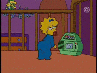

 We all have a little something special that makes us who we are. I have no idea what mine is but I thought that would be great to open up with. My name is Margarita Salas (nickname is Maggie or Maggs), and I want to tell you a little about myself and my journey to where I am now. The name of my website is ingredients because my name is Margarita, and unlike the drinks, this is the ingredients to my journey so far.